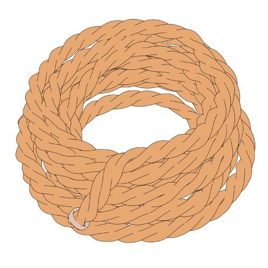
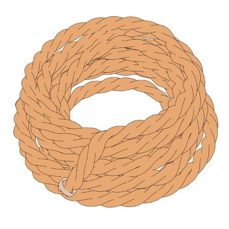

Wonder Woman
Wonder Woman (nombre real Diana de Temiscira) Es una princesa guerrera de las Amazonas, pueblo ficticio basado en el de las amazonas de la mitología griega.Está dotada de una amplia gama de poderes superhumanos y habilidades de combate de batalla superiores, gracias a sus dones obtenidos de los dioses y su amplio entrenamiento. Ella posee un gran arsenal de armas, incluyendo entre las principales el Lazo de la Verdad, un par de brazaletes mágicos indestructibles, su tiara, que sirve como arma, y en algunos relatos, en la edad de oro, tuvo un avión invisible.
 
